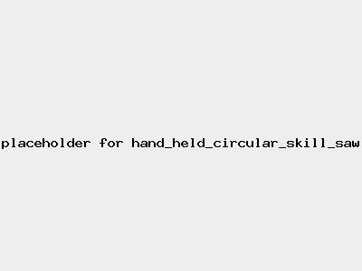

Risk Assessment / Hand Held Circular Saw (Skil Saw)
High Risk
| Risk Assessment / Hand Held Circular Saw (Skil Saw) | Level 3 High Risk |
|  |
|
|
| Before | During | After |
|---|---|---|
|
|
|
| Hazard | Persons | Before Controls | Controls | After Controls | ||||
|---|---|---|---|---|---|---|---|---|
| Severity | Likelihood | Risk | Severity | Likelihood | Risk | |||
| Entanglement in moving machinery | Operator | Level 3 Serious injury | Level 3 May happen | Level 3 High |
| Level 3 Serious injury | Level 1 Very unlikely | Level 2 Medium |
| Burns | Current and next operator | Level 1 Minor injury | Level 2 Unlikely | Level 1 Low |
| Level 1 Minor injury | Level 1 Very unlikely | Level 1 Low |
| Fire | People in the vicinity | Level 2 Significant injury | Level 2 Unlikely | Level 2 Medium |
| Level 2 Significant injury | Level 1 Very unlikely | Level 1 Low |
| Ejected material in eyes | Operator | Level 2 Significant injury | Level 2 Unlikely | Level 2 Medium |
| Level 2 Significant injury | Level 1 Very unlikely | Level 1 Low |
| Rotating Parts causing cuts | Operator | Level 4 Fatality, life-changing injury | Level 3 May happen | Level 3 High |
| Level 4 Fatality, life-changing injury | Level 1 Very unlikely | Level 2 Medium |
| Tool Kickback causing sprains and strains | Operator | Level 3 Serious injury | Level 4 Likely | Level 3 High |
| Level 3 Serious injury | Level 2 Unlikely | Level 2 Medium |
| Hearing Damage | Operator | Level 4 Fatality, life-changing injury | Level 4 Likely | Level 3 High |
| Level 1 Minor injury | Level 1 Very unlikely | Level 1 Low |
| electrocution | Operator | Level 4 Fatality, life-changing injury | Level 1 Very unlikely | Level 2 Medium |
| Level 4 Fatality, life-changing injury | Level 0 Theoretical | Level 1 Low |
| Trip | Operator | Level 2 Significant injury | Level 3 May happen | Level 2 Medium |
| Level 2 Significant injury | Level 1 Very unlikely | Level 1 Low |